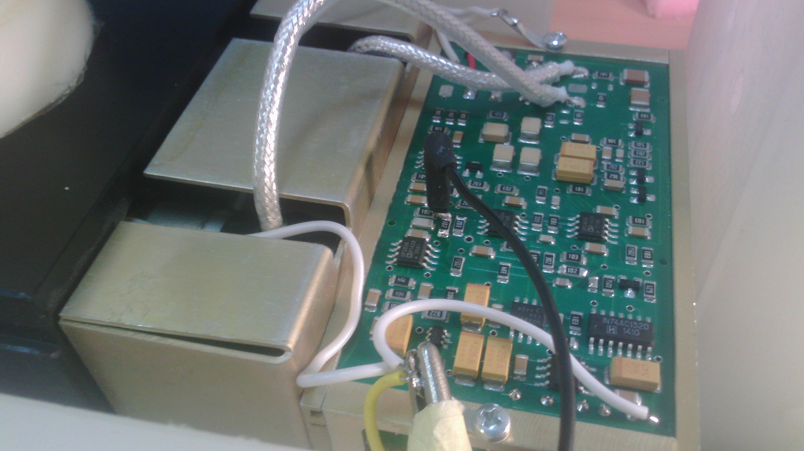
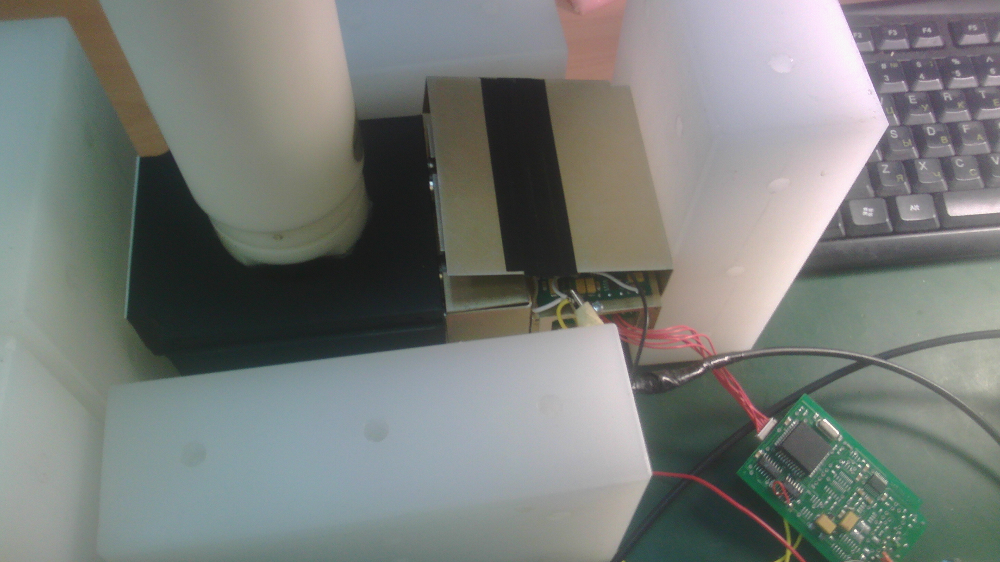
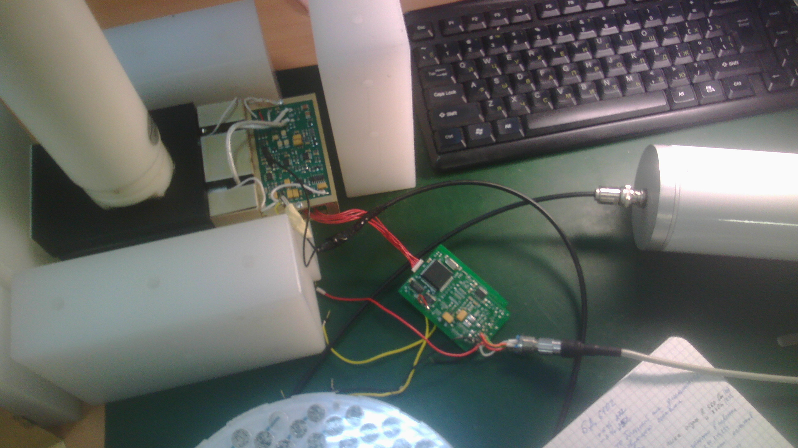
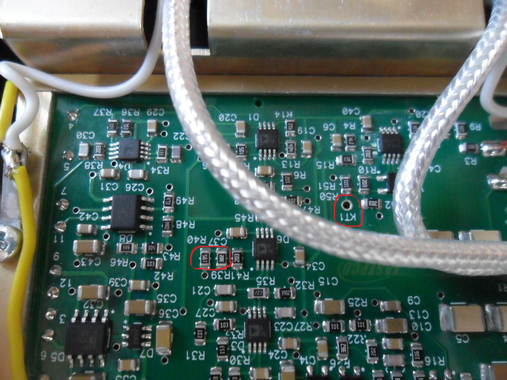
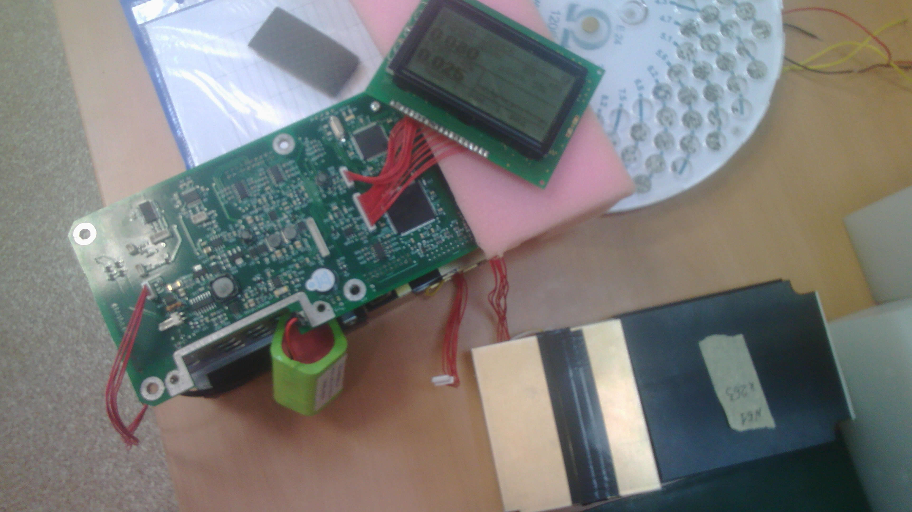

Настройка платы нейтронного детектора МКС-AT6102
(новая плата)
- Присвоить порядковый номер, занести в перечень
- Припаять штырек ПЛС к контрольной точке КТ1 (см. рис). Глубоко не вставлять, чтобы не коснулась нижнего экрана!
- Очистить плату кисточкой от остатков пайки
- Подключить к припаянной ПЛС АЦП

- Накрыть плату крышкой экраном и прижать её кирпичом, либо закрепить винтом, чтобы был контакт между крышкой
и корпусом

- Подключить питание к БД через БОИ, либо через USB-адаптер и переходную плату (устройство обработки
БДКН-03)

- Включить ATAS, поставить источник 252Cf в центр детектора. Настроить 259 канал (допуск от 252 до
272). Если присутствует два пика, то их нужно
объединить в один. Для этого нужно определить, какой пик соответствует какому счетчику, и пик с бОльшим
каналом сместить влево резистором соответствующего счетчика (R7 либо R6). Сопротивление нужно увеличить.
Левый пик нельзя смещать вправо!

- Настройка общего пика осуществляется резисторами R39(точно) и R40(грубо). Для уменьшения канала нужно
увеличить сопротивление

Результат расчет в форме необходимо проверить!
Проверить фон. В готовом МКС-6102 отключить блок n детектирования, подключить настраиваемый. Скорость счета
должна быть 0,007-0,045 s-1

Наклеить малярку с номером прибора, каналом и фоном
Отдать на заливку
После заливки перепроверить фон